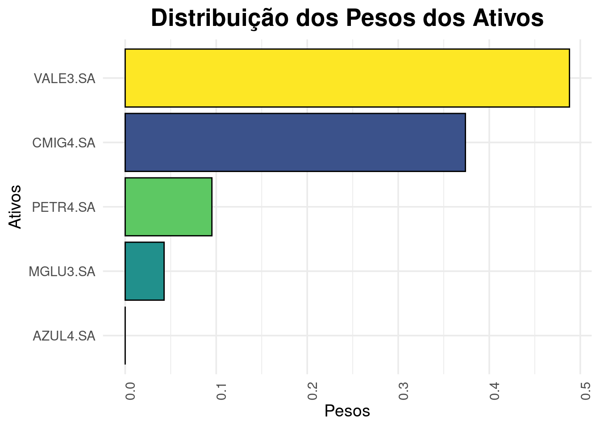

A função de utilidade quadrática é usada na otimização de portfólios para encontrar a alocação de ativos que maximiza o retorno esperado e minimiza o risco. A função de utilidade quadrática é dada por:
\(U = \mu^T w - \lambda \sigma^2\)
onde:
\(U\) é a função de utilidade
\(\mu^T\) é o vetor de retornos esperados
\(w\) é o vetor de pesos dos ativos
\(\lambda\) é o fator de aversão ao risco
generalizando para o caso de \(n\) ativos, a função de utilidade quadrática é dada por:
\(U = \mu^T w - \lambda w^T \Sigma w\)
onde:
\(\Sigma w\) é a matriz de covariância dos retornos dos ativos
\(w^T\) é o vetor transposto de pesos dos ativos
\(w\) é o vetor de pesos dos ativos
\(\lambda\) é o fator de aversão ao risco
\(\mu\) é o vetor de retornos esperados
\(U\) é a função de utilidade
A otimização de portfólios é um problema de maximização da função de utilidade quadrática sujeita a restrições, como a soma dos pesos dos ativos deve ser igual a 1 e os pesos dos ativos devem ser maiores ou iguais a zero.
Primeiro vamos carregar os pacotes necessários
Ativos selecionados
# Ativos selecionadostickers <-c("VALE3.SA","PETR4.SA","AZUL4.SA","MGLU3.SA", "CMIG4.SA")prices <-getSymbols(tickers, src ='yahoo', from ="2019-05-30",to ="2024-05-30",auto.assign =TRUE, #obs auto asign carrega os resultados para o ambientewarnings =FALSE,) %>%map(~Ad(get(.))) %>%reduce(merge) %>%`colnames<-`(tickers)head(prices)
#| message: false# Criando o objeto de otimizaçãoportf <-portfolio.spec(assets =colnames(asset_returns_xts))# Adicionando restrições, como por exemplo, a soma dos pesos dos ativos deve ser igual a 1portf <-add.constraint(portf, type ="full_investment")# Adicionando restrição de peso mínimo e máximo para cada ativo# Neste caso, o peso mínimo é 0 e o peso máximo é 1portf <-add.constraint(portf, type ="long_only")# Adiciona a função objetivo, que é minimizar o desvio padrão da carteiraportf <-add.objective(portf, type ="risk", name ="StdDev")# Resolve o problema de otimizaçãoopt_portf <-optimize.portfolio(asset_returns_xts, portf, optimize_method ="ROI")
# extraindo os pesos para um data frameweights <-extractWeights(opt_portf)# Adicionando os nomes dos ativos sem colocá-los no índiceweights <-data.frame(tickers =colnames(asset_returns_xts), weights, row.names =NULL)weights
ggplot(weights, aes(x =reorder(tickers, weights), y = weights, fill = tickers)) +geom_col(color ="black", show.legend =FALSE) +theme_minimal(base_size =14) +theme(axis.text.x =element_text(angle =90, hjust =1),plot.title =element_text(hjust =0.5, size =20, face ="bold"),plot.subtitle =element_text(hjust =0.5, size =16),legend.position ="none") +scale_fill_viridis_d() +labs(title ="Distribuição dos Pesos dos Ativos",x ="Ativos",y ="Pesos") +coord_flip()

Realizando otimização da função de utilidade com o PortfolioAnalytics
#criar o objeto de otimizaçãoportf <-portfolio.spec(assets =colnames(asset_returns_xts))# Adicionando restrições, como por exemplo, a soma dos pesos dos ativos deve ser igual a 1portf <-add.constraint(portf, type ="full_investment")# Adicionando restrição de peso mínimo e máximo para cada ativo (0-1)portf <-add.constraint(portf, type ="long_only")# Adiciona a função objetivo, que é maximizar o retorno esperadoportf <-add.objective(portf, type ="return", name ="mean")# Adiciona a função objetivo, que é minimizar a variância da carteiraportf <-add.objective(portf, type ="risk", name ="var")portf <-add.objective(portf, type ="quadratic_utility", risk_aversion =10)# Resolve o problema de otimizaçãoopt_portf <-optimize.portfolio(asset_returns_xts, portf, optimize_method ="ROI")# Extraindo os pesos dos ativosextractWeights(opt_portf)
O objeto de portfólio é uma lista que contém as seguintes informações:
assets: vetor de nomes dos ativos
constraints: lista de restrições
weight_sum: restrição de que a soma dos pesos dos ativos deve ser igual a um valor específico
full_investment: restrição de que a soma dos pesos dos ativos deve ser igual a 1
dollar_neutral: restrição de que a soma dos pesos dos ativos deve ser igual a zero
box: restrição de que os pesos dos ativos devem estar dentro de um intervalo específico
long_only: restrição de que os pesos dos ativos devem ser maiores ou iguais a zero e menores ou iguais a um (caso especial da restrição box)
group: restrição de que os pesos dos ativos de um grupo específico devem ser iguais
turnover: restrição de que o turnover da carteira deve ser menor ou igual a um valor específico a partir de uma carteira inicial
diversification: Especifica um valor de diversificação para a carteira
position_limit: Permite ao usuário definir o número máximo de posições (ativos com pesos não nulos) e o número máximo de posições compradas e vendidas.
return: Especifica o retorno médio esperado da carteira
factor_exposure: Especifica a exposição da carteira a fatores de risco
leverage_exposure: Especifica a alavancagem maxima da carteira onde a alavancagem é definida como a soma dos pesos absolutos dos ativos
objectives:
type: ‘return’,‘risk’, ‘risk_budget’, ‘quadratic_utility’, or ’weight_concentration